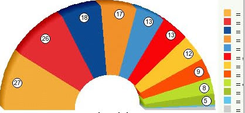

Proportional Representation
 One of the primary goals of the Green Party is to change our electoral system from winner-take-all elections to proportional representation (PR). PR is an over-all strategy for fuller and fairer representation in government, that encompasses several types of voting systems. It is used by most of the world's established democracies.
One of the primary goals of the Green Party is to change our electoral system from winner-take-all elections to proportional representation (PR). PR is an over-all strategy for fuller and fairer representation in government, that encompasses several types of voting systems. It is used by most of the world's established democracies.Our current U.S. winner-take-all system - where the highest vote-getter represents 100% of the electorate - causes many problems. Among them are lack of choice for voters; over-representation of some parties and under-representation of others; combined with gross under-representation of women, and racial and political minorities; low voter turnout; issue-less campaigns; a two-party monopoly/duopoly; corruption of politics by big money; and gerrymandering of legislative districts for incumbents' protection.
PR addresses these issues:
PR gives representation to voters from both minority and majority constituencies. Blocs of like-minded voters win representation in multi-seat districts in proportion to their voting strength. A constituency or party that receives 10% of the vote wins 10% of the seats, 30% of the vote wins 30% of seats, and so on. This way, almost the entire electorate is represented in government, with the majority still ruling. Because of this feature, PR is a viable means to resolve California Voting Rights Act challenges to uphold voting rights and is superior to redistricting to achieve this end.
PR increases voter participation. More people have the ability to elect a candidate who represents them. This gives people more reason to vote -- and they do. Turnouts average 70% to 90% of eligible voters in PR democracies. By contrast in California, 55.5% of eligible voters turned out for the 2012 general elections, and 43.7% in the 2010 general elections. This becomes worse in the primary, especially under the new Top Two system, where only 22.5% of eligible voters turned out in the June 2012 primary election.
PR increases diversity in representation. Women in the national and state legislatures of PR democracies often make up between 25% to 50% of the seats. Racial and other minorities are also better represented under PR. This helps legislatures more closely reflect the composition of the general population, something critical for a state as diverse as California. By contrast, 83% of the U.S. Congress in 2012-2014 is male and 75% of members state legislatures (74% in California), and representation of racial minorities is also far below their proportion of the population.
PR is an effective campaign finance reform. It reduces the percentage of votes needed to win, thus the amount of money needed to win. Green Parties in Europe and elsewhere where PR is in place, consistently win fair representation, despite spending far less than the major parties. By lowering the amount to win, PR also makes it easier to provide public financing of elections.
PR also reduces the problem of gerrymandering. Almost all voters in a district receive representation under PR, regardless of how district lines are drawn. Under the current system, incumbents and their parties are able to draw district lines to their advantage in many states. Even in states like California with citizen-based redistricting, partisan residential patterns greatly limit the process and regardless by definition, single-seat, winner-take-all districts exclude those not represented by the winner.
How does it work?
PR uses multi-seat districts where representatives are elected in proportion to the votes they receive. In the implementation of PR systems, a threshold of votes is usually required to ensure that representatives have at least a minimum base of support. There are forms of PR appropriate for all levels of elections and it can be used in partisan and non-partisan elections:

List systems - Party based, they elect parties in proportion to their share of the popular vote. These are the most widely used systems, and are appropriate for federal and state legislative bodies.
Mixed systems - Seats are awarded both proportionally and by single-seat districts. These do well in combining geographic and issue-based representation, and are also appropriate for federal and state legislative bodies. Germany and New Zealand are examples of this approach.
Ranked Choice Voting (also known as Choice voting, Preference voting or Single-Transferable Vote) - Candidate-based, voters list their first, second, third, etc. choices for a particular race. Votes are transferred as candidates are eliminated, thus all votes help select the winner. Applicable to all levels of government. Ranked Choice Voting was successfully used to elect city councils in two dozen U.S. cities, until the 1950's. This success led to its downfall. Political machines resented the loss of control of elections, and anti-reformers resisted diversity, especially African-Americans in government during a time of racial tension and desegregation of schools. But its practice has come back and is in use for municipal and county elections in San Francisco and Alameda Counties, as well as elsewhere around the country. Ranked Choice Voting can be used for both single-seat and multi-seat elections. When it is used for multi-seat elections, it results in proportional representation.
The Green Party seeks to replace winner-take-all elections by implementing proportional representation at all levels of government:
To promote better understanding of different electoral systems, establish commissions at local, state and federal levels, to examine alternatives to the current winner-take-all electoral system, and present the findings to the public.
To build practical experience with PR, implement PR in neighborhood councils and organizations, non-profit boards of directors, union locals, PTAs and other civic and community-based organizations. Conduct policy-based 'preferenda' with PR, to gauge public sentiment on public policy. Amend the state elections code to allow political parties to conduct their County Council/Central Committee elections with ranked choice voting.
To promote PR for use by cities and counties and other local elections, support legislation that would give a "home rule" option to general law cities, counties and school districts (an option the state's charter cities already have), allowing them to choose to use electoral systems like ranked choice voting.
To promote PR for elections to the state legislature and Congress, initiate a statewide referendum asking voters to choose between winner-take-all elections and elections based in PR.
To determine what form of PR would be appropriate for such elections, establish an electoral reform commission and/or convene a constitutional convention, specifically for this purpose. Place the recommended system on the ballot for a vote of the people.
To promote PR for Congressional elections, approve the federal Voters Choice Act (HR 3068) that gives states the option of electing their congressional delegation by PR (California elects 52 House members); and call upon members of Congress to support a bill to establish independent redistricting commissions to draw districts designed for PR elections.

We welcome all Californians who share the Green vision.
Join us in creating a new politics.
GREEN PARTY OF CALIFORNIA
PO Box 485
San Francisco, CA 94104
(916) 448-3437